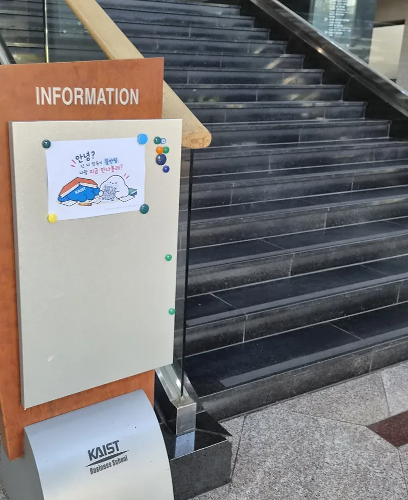
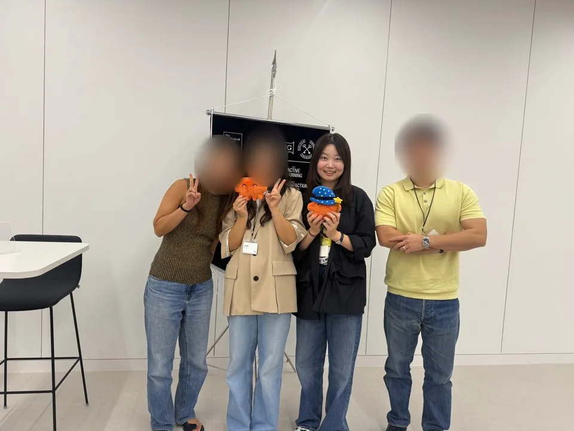

이은상조직의 제도와 시스템을 바꿔 온 경험으로 AX를 설계합니다
12년 동안 기업의 평가·보상, 채용, 교육 제도와 이를 운영하는 사내 시스템을 함께 바꿔 왔습니다. 외부 규제와 내부 변화가 생길 때마다 제도와 업무 절차, 시스템을 함께 고쳐 조직이 일하는 방식을 개선했습니다.
현재 KAIST MBA에서는 IT경영 및 AI전략을 전공하며 현대자동차의 DT전략을 다룬 경영사례분석대회에서 SDV 중심 조직에 맞는 성과지표와 인재 전략을 제안했고 대상을 수상했습니다.
AI를 활용해 서비스를 직접 기획하고 배포한 경험으로, 인사 현장에서 겪은 규제 대응 문제를 풀기 위해 HR 컴플라이언스 플랫폼 피플로를 만들었습니다. KAIST 주관 AI 에이전트 프로그램에서 4개월간 문제 정의부터 기술 구현, 개념검증(PoC)까지 맡았고, 구현 수준과 사업화 가능성을 단계별로 심사받아 최종 오디션에 진출했습니다.
- AI 프로젝트
- HR 컴플라이언스 플랫폼 '피플로', AI Parenting Agent '아이데이'
AI 커리어 코치 'CareerPT'(팀), Mental Wellness Project 'Peace-Collector'(팀) - 수상
- 2025 대한민국 MBA 경영사례분석대회 대상(교육부장관상, 팀, 2026.01): 현대자동차의 디지털 혁신 전략 과제에 'Next Transformation: 데이터·조직·운영을 연결하는 SDV 혁신 프레임' 제안 고용노동부 장관 표창(개인, 2024.04): 채용·교육·급여·기업문화 제도 개선과 시스템 개발로 일하는 방식과 생산성을 높이고, 직무·능력 중심의 합리적인 임금체계 개편에 기여
- 제도 및 시스템
- HRM 구축·고도화, 전사 인사 제도 설계 및 도입 경험
피플로
법이 바뀌면 우리 회사가 해당되는지 확인하고, 고칠 규정 조항을 찾아 개정 문안과 절차, 이행 확인까지 한 흐름으로 처리합니다. AI는 초안을 쓰고, 법령의 적용 조건은 규칙 엔진이 회사 사실과 대조하고, 적용 여부와 문안은 담당자가 확정합니다. 코드는 AI 에이전트가 썼고, 저는 작업 범위와 승인 기준을 정한 뒤 자동 검사와 다른 회사 모델의 교차 검토로 결과를 확인했습니다.
이 제품으로 KAIST OverEdge(KAIST AI대학원과 KAIST 창업원이 주관한 4개월 AI Agent 프로그램)의 최종 오디션에 진출했습니다.
그 밖의 작업
-
아이데이: 부모들의 반복적인 의사결정을 지원하는 Parenting Assistant
날씨와 미세먼지 정보는 넘치는데, 오늘 내 아이에게 무엇을 입히고 챙길지는 결국 부모가 판단해야 합니다. 아이데이는 환경 정보를 아이의 체질과 생활 패턴 기준으로 해석해, 아침 준비에 참고할 추천을 먼저 제시합니다. 이 아이템으로 KAIST OverEdge에 지원해 선발됐고, 과정 중 Pivot하여 HR 컴플라이언스 솔루션을 만들었습니다.
더보기 +접기 −
- 고객 확인 및 구현
- 타깃 고객층 인터뷰와 문제 검증 분석(만 8세 미만 자녀 양육자 인터뷰, 육아 커뮤니티 게시글 분석)
- 개인별 프로필 온보딩을 바탕으로 한 AI 데일리 육아 리포트, 오늘의 옷차림 추천, 알림장 분석
- 구현 방식
- 규칙과 AI를 나눠, 추천은 날씨와 프로필 규칙으로 계산하고 종합 판단 리포트는 LLM이 작성합니다.
- 공공데이터 네 가지를 실시간으로 결합하고, 사용자별 데이터는 데이터베이스 수준(RLS)에서 분리했습니다.
- 기술
- Next.js 15 (App Router)
- TypeScript
- Supabase (Google OAuth, PostgreSQL, RLS)
- Claude Sonnet
- Tailwind CSS
- shadcn/ui
- Vercel
-
CareerPT: 내 강점에서 출발해 커리어 방향과 실행을 잇는 AI 코치
강점 진단 서비스는 진단에서 멈추고, 실행을 돕는 도구는 자기이해가 빠져 있습니다. CareerPT는 그 둘을 한 경험으로 잇습니다. 개인의 강점에서 출발해 커리어 방향을 찾게 하는 주제라, 인사 담당자였던 저에게 의미가 큰 프로젝트였습니다.
더보기 +접기 −
- 설계 프레임
- 갤럽 강점(CliftonStrengths) 34개 테마 가운데 사용자의 Top 5 강점에서 출발합니다.
- ICF 코칭 핵심역량에 맞춰 4단계 커리어 인터뷰(열기, 합의, 탐색, 마무리)를 설계했습니다. 탐색 단계에서는 매 턴마다 코칭 행동 네 가지 가운데 하나를 고릅니다.
- AI 구조
- 역량 방향은 규칙으로 매칭하고, 설명 문장만 AI가 사용자의 맥락에 맞춰 씁니다.
- 액션 아이템은 생성, 5중 검증(역량 적합, 강점 연계, ICF 준수, 안전, 형식), 재작성, 폴백의 네 단계를 거칩니다. 검증을 통과한 것만 내보냅니다.
- 검증 및 사용자 확인
- 34개 페르소나로 코칭 세션을 시뮬레이션하고, 결과를 보고 프롬프트를 고치는 일을 반복했습니다(ralph loop). 코치, 페르소나, 심판은 서로 다른 AI 모델에 맡겼습니다.
- 유저 인터뷰와 사용자 피드백 15명, 동료 평가 46건을 반영했습니다.
- 기술
- Next.js (App Router)
- TypeScript
- Supabase (Auth, PostgreSQL, RLS)
- Claude API
- Extended Thinking
- 프롬프트 캐싱
- Vercel
-
Peace-Collector: 일상의 불안을 기록하고 작은 행복을 모으는 앱
Anthropic의 Claude 빌더톤 Fable 5.1 Build Days(2026년 9월)에 KAIST MBA 동기 네 명이 출전해 만든 멘탈 웰니스 앱입니다. 빌더톤에서 그치지 않고 캠퍼스에서 작은 프로젝트로 이어 가, 홍보 이벤트로 베타 사용자를 모으고 사용자 인터뷰를 진행했습니다.
Swift 6 · SwiftUI · WidgetKit · Core Haptics · React 19 · TypeScript · Vite · Tailwind CSS · Cloudflare Pages · GA4
더보기 +접기 −
- 도입 배경
- 불안을 없애려 하기보다 한 번 알아차리고, 주변의 작은 행복을 모으는 짧은 행동으로 하루의 기분을 바꾸도록 돕는다는 생각에서 출발했습니다.
- 관계, 비교, 기대, 성과, 불확실성에서 오는 일상의 불안을 다루고, 무거운 상담 기록 대신 짧고 부담 없는 상호작용을 택했습니다. 불안을 진단하거나 치료한다고 말하지 않고, 죄책감이나 연속 사용 압박을 만들지 않는 것을 원칙으로 정했습니다.
- 홍보와 사용자 확인
- 설치와 가입 없이 QR로 여는 모바일 웹 베타를 따로 배포했습니다. 중간고사 기간에 맞춰 캠퍼스 곳곳에 QR 포스터를 붙여 베타 사용자를 모으고 사용자 인터뷰로 이어지게 했습니다.
- 유저 인터뷰를 했고, 앱 안 설문으로도 반응을 받도록 구성했습니다.


- 화면
- 하루에 한 번 다섯 가지 불안 유형 가운데 하나를 고르는 홈 화면, 그 유형에 맞는 문장을 모으는 Wisdom, 사진 한 장과 짧은 글을 남기는 Moment
- 모은 스티커를 보는 Collection, 날짜별 기록을 달력으로 보는 History, 최근 7일 통계와 기록 전체 삭제가 있는 My
-
삼성그룹 사장단 50인 생성형 AI 집중교육 1:1 핸즈온 코치
사장단 50여 명이 참여한 실습 교육에서 1:1로 개인 프로젝트를 직접 만들도록 돕고 진행 방법과 원리를 설명했습니다.